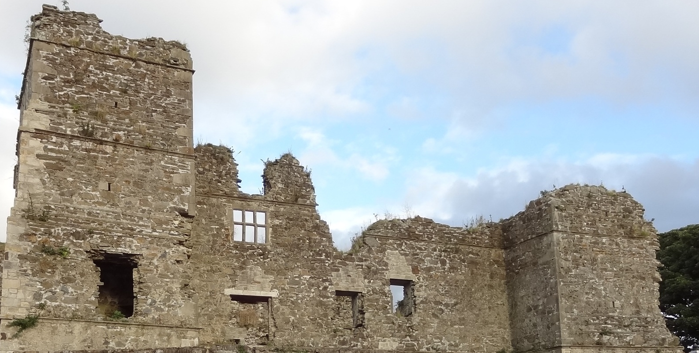

About The Town
The town of Manorhamilton was built by Sir Frederick Hamilton and it was here between 1634 and 1638 that he built Manorhamilton Castle, his fortified house that gives the town its name. It is seen as one of a group of six in Ireland which feature defensive flanking towers at each corner. The castle withstood attacks in 1641 during the Irish rebellion, but was later taken and burned by the Earl of Clanrickard in 1652 during the War of the Three Kingdoms. A permanent exhibition is on display at Manorhamilton Castle Heritage Centre, including artifacts from the 17th century, replica period costumes, furniture, a castle model and other interesting items and information which allow you to peek through the centuries to what life was like when the castle was in use. Manorhamilton Castle and Heritage Centre is open year-round to the general public and to organised tours. A tour of the recently restored castle ruins and grounds can be taken, conducted by an experienced and informative guide. The Manorhamilton Heritage Trail guides you through the rich heritage and history of the town. More Info found here
